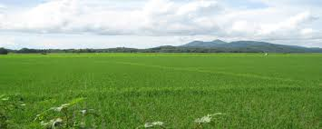

Overview
Agri-tourism allows visitors to experience farm life, agriculture, and local food production in Zamboanga Sibugay. Known as the "Rubber Capital of the Philippines," the province connects tourists with nature and rural communities while promoting sustainable livelihoods through its vast plantations and rich coastal resources.
The province is a powerhouse of rubber production, coconut farming, and the famous "Sibug-Sibug" oysters. Visitors can observe the meticulous process of rubber tapping, explore expansive rice fields, and witness innovative aquasilviculture in the province's lush mangrove areas.
Popular Agri-Tourism Sites
The Rubber Plantations of Titay

The municipality of Titay is the heart of the province's rubber industry. Visitors can take guided tours through thousands of hectares of rubber trees, witness the early-morning "tapping" process where latex is collected, and learn how this raw material is processed for global export.
Kabasalan Rice and Industrial Hub

The agricultural plains of Kabasalan highlight the province's food security. Tourists can experience traditional rice farming, explore the local "One Town, One Product" (OTOP) centers, and see how the community integrates modern technology with heritage farming practices.
Kabug Mangrove Park and Wetlands

Kabug Mangrove Park and Wetlands is one of the most important eco-cultural attractions in Zamboanga Sibugay, located in the municipality of Siay. It features a wide area of preserved mangrove forests that serve as a natural protection against coastal erosion and storms. The park has wooden boardwalks that allow visitors to walk through the mangroves while observing the rich biodiversity, including fish, crabs, and various bird species.